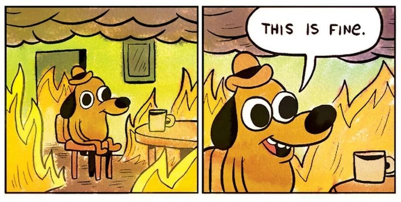

WELCOME!
Strategies for Successful Bug Hunting in Drupal ProjectsIce-breaking
Catch all the bugs...
But... what is a bug?
A bug is an unexpected problem with software or hardware.
Examples:
- Page not loading
- Users can't login
- A functionality is not working as expected
The first bug

¿Bug or feature?

Why it is important fixing a bug?
Bugs have consequences
Bugs have consequences
Why it is important fixing a bug?
Bugs may:
- Break the User Experience
- Produce financial losses
- Make never-ending projects
- Breach security: data leak, data loss...
What will we see during this session?
- General strategy to deal with bugs
- Bug hunting methodology: detection, bug dealing, tests coverage
- Tools: PHP tools, Continuous integraion, Drupal modules, Xdebug
- Quality assurance to minimize bugs
The Strategy
- Detect the bugs as soon as possible
- Correct the bugs with the best solution possible
- Test your site to prevent bugs before releasing
Bug hunting methodology
Detection
Bug hunting methodology
Detection
- Manual
- Automatic
Both are important!
Bug hunting methodology
Detection
Be proactive!
Bug hunting methodology
Detection
Check status report
Bug hunting methodology
Detection
Check logs
Bug hunting methodology
Detection
Review analytics
Bug hunting methodology
Detection
Smoke tests
Bug hunting methodology
Bug dealing
Bug hunting methodology
Bug dealing
Take it easy!
Bug hunting methodology
Bug dealing
Ask for help.
Bug hunting methodology
Bug dealing
- Point out the steps to reproduce the problem.
- Go to the basics
- Think what is the underlying problem that is causing the bug
- Choose the most appropiate solution: choose long term solutions over quick fixes
- Cover the bug with tests
Tools
Logging Drupal modules
- Syslog
Tools
Logging Drupal modules
- DB Log
- DBLog filter
- Watchdog Statistics
Tools
Logging Drupal modules
Monolog
Tools
Logging Drupal modules
Log entity operations
Tools
Content revisions
Tools
PHP static analysis tools
- PHPStan
- PHP code sniffer (phpcs)
Tools
Debug the code
Tools
Debug the code
Xdebug
- Available for Netbeans, VS Code and PHPStorm
- Ready to use in DDEV sites with ddev xdebug
Tools
Debug the code
Chrome dev tools
- Use html inspector to find errors in markup
- Read Console to catch possible errors
- Use Network tab to look for information in the requests
- Use Source tab to add breakpoints and start debugging
Quality assurance (QA)
Quality assurance (QA)
Pair code review through Pull / Merge requests
Quality assurance (QA)
Manual review of the new functionalities
Quality assurance (QA)
Try breaking the code!
Quality assurance (QA)
Continuous integration
Quality assurance (QA)
Static analysis tools
Quality assurance (QA)
Tests
- Unit tests: PHPUnit
- Functional tests: Behat, Nightwatch, Cypress
- Regression tests